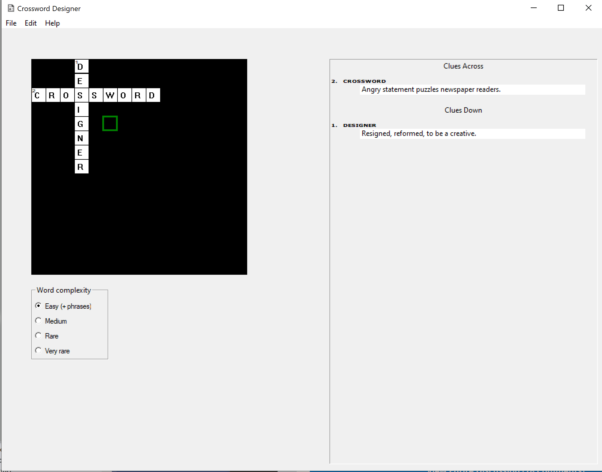
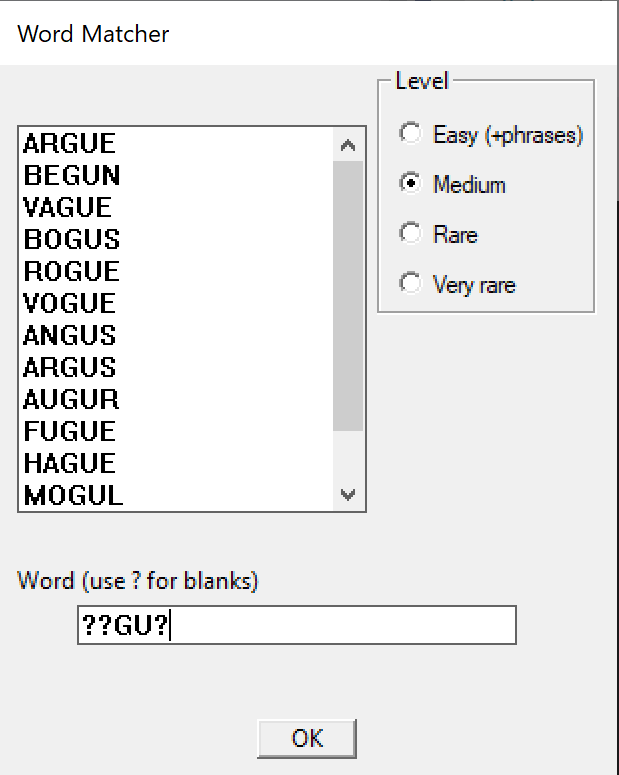
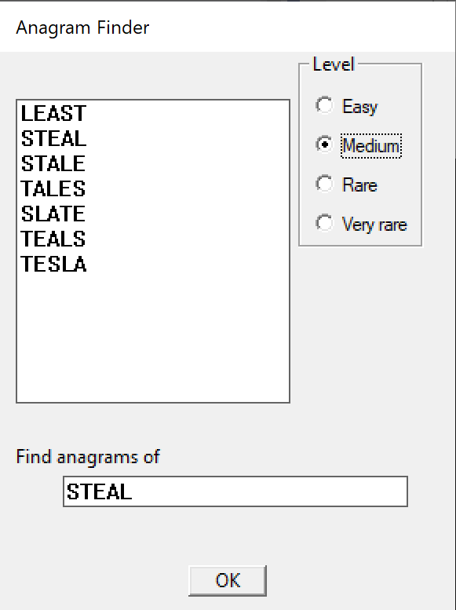

Crossword Designer is a program to construct crosswords. It is available for Microsoft Windows. It is suitable for designing crosswords for educational use, or a for a church or club magazine. It is free and open source. It's not intended to be a competitor to commercial crossword design packages, but to cater to the occasional user.
To get Crossword Designer simply download the executable from CrosswordDesigner.exe. It is a Windows executable with no dependencies. If you are a developer and want to contribute to program or wish to submit a bug report or suggestion, the project is hosted on GitHub here.
Crossword Designer is very simple to use. Use the arrow keys or the mouse to move the green square cursor over the crossword, then press a letter key to generate a letter, the space key to generate a space, or the delete/backspace key to generate a black square. Numbering and clue numbering is done automatically. When you are happy with the grid, fill in the clues. To create crosswords with a theme, for example on the reading of the day for a church magazine, the hand-generated method is probably the best way.
Crossword construction software wouldn't be crossword construction software without an auto-fill method. Crosword Designer lets you choose the word difficulty level. It then auto-fill any empty spaces on the grid, when you select "Fill grid" from the edit menu. English-style crosswords usually auto-fill almost instantaneously. American-style grids with densely-interlocking words are much more challenging. Try to choose a grid which has separate regions with only one or two connections between them, and not too many long words. Or try filling in some of the longer words, which you have to do for "theme" entries anyway. Also, set the word difficulty to "very rare". This will generate a crossword with some very obscure words, which is a feature of American-style crosswords which is difficult to avoid. American-style grids can take many hours to auto-fill, and might never fill at all.
|  |  |
| Word Matcher | Anagram Finder |
Whilst using the auto-fill to generate a complete crossword from a random starter grid is fun, to create a high-quality crossword it is necessary to have some human input. The word matcher dialog will suggest words from the dictionary. There is also an anagram finder to help with the construction of clues. If designing a crossword on a theme, it is a lot easier to abandon the convention that the grid must be symmetrical.
By default, Crossword Designer saves files in the .xpf format. However this format has never really caught on in the community. The most common format is the .puz. Puz files are proprietary and it is necessary to rely on unofficial documentation. Crossword Designer doesn't currently handle scrambled .puz files (these are designed for end-users, so that the solution can't be revealed by casually examining the binary), and it cannot handle .puz files with features that Crossword Designer doesn't support, like non- Latin characters. Ipuz is an open source alternative to .puz. Crossword Designer has very basic support for .ipuz files. To submit crosswords created with Crossword Designer to third parties, you will probably want to save to .puz format.
If you are publishing your own magazine, you will also want to export crosswords from Crossword Designer into a format readable by your desktop publishing software. Crossword Designer provides a way of copying the puzzle grid to the clipboard, the solution grid to the clipboard, the solution grid as text (you will want to format it in your own software), and the clues as text. Paste into the desktop publishing software and format for your specific needs.
If you are publishing the crosswords on the web, Crossword Designer offers two export options, static HTML and interactive HTML. Static HTML allows the end user to print off the crossword to complete with pencil and paper. Interactive HTML creates a page with Javascript in which he can enter the solution. An example can be found here . You can just out up these pages and link to them from your own website, or edit them simply to match your house style.